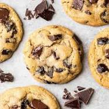

Chocolate Chip Cookies!

Follow this recipe for a yummy chocolate chip cookie recipe!
These chocolate chip cookies are to die for! Make them for your friends and family!
Ingredients
- Butter: This classic chocolate chip cookie recipe starts with two sticks of butter creamed with white and brown sugars. The blend of sugars creates a perfectly balanced flavor.
- Eggs: Eggs add moisture and act as a binding agent, which means they help hold the dough together.
- Vanilla: Vanilla extract enhances the overall flavor of the chocolate chip cookies.
- Baking Soda: Baking soda acts as a leavener, which means it helps the cookies rise.
- Salt: A pinch of salt enhances the flavors of the other ingredients, but it won't make the cookies taste salty
- Flour: All-purpose flour helps create gluten, which adds structure to the cookie dough.
- Chocolate Chips: Of course, you'll need semisweet chocolate chips! You can use dark or milk chocolate chips if you prefer.
Steps
- Beat the butter and sugars, then beat in the eggs and vanilla.
- Add the baking soda to the mixture.
- Stir in the flour and chocolate chips.
- Drop dough onto a prepared baking sheet.
- Bake at 350F until the edges are golden brown, about 10 minutes.